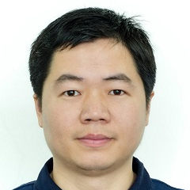
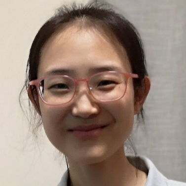

摘要: 编译器是软件产业的重要基石之一，编译器质量对于维护国家信息产业的供应链安全至关重要。本报告在揭示编译器优化类故障的触发机理的基础上，主要分享大连理工大学团队在编译器优化类故障检测和定位方面的进展。针对编译器优化类故障，我们提出了同时考虑优化序列和测试程序多样性的新测试框架，成功发现主流编译器的一批严重故障。在此基础上，提出了基于优化序列的高效故障定位方法，Top5准确率比现有方法定位准确率提高50%以上。团队同时研发了编译器故障高效检测及定位工具谛听， 已为GCC与LLVM提交近400个Bug，其中180+已被确认或修复。
简介:江贺，教授、博士生导师、大连理工大学人工智能大连研究院院长，国家优秀青年科学基金获得者（优青），大连YOCSEF主席。目前主要研究兴趣为智能软件工程。先后在ACM/IEEE系列汇刊（TOSEM, TSE, TKDE, TSC等）, 中国科学等期刊及ICSE, ASE 等国际会议发表论文70余篇，在科学出版社出版专著一部，在人民邮电出版社出版著作及译著各1部。担任IEEE Trans. on Reliability, Journal of Software: Evolution and Process, Frontiers of Computer Science, 计算机科学等期刊编委（或青年编委）。先后承担或参加国家自然科学基金项目（青年、面上、优青、重点）、国家重点研发计划，成果在华为、百度、航天等企业落地应用。 2013年获得大连市五一特等奖章。2013年入选教育部新世纪优秀人才计划。2014年指导博士生获得中国计算机学会优秀博士学位论文奖（CCF优博）。2016年获得全国东软-NASAC青年软件创新奖。2017年获得国家优秀青年科学基金资助。2018年研究成果获得国际软件工程大会ACM SIGSOFT 杰出论文奖。2019年入选大连理工大学星海杰青计划
摘要: In recent years, Artificial Intelligence and Software Engineering have been penetrating into each other. On one hand, more and more AI techniques have been successfully applied to various SE activities, such as software testing, defect prediction, fault localization, automatic repair, automatic code generation and completion, etc. On the other hand, more and more SE techniques are adopted to verify, validate and debug AI systems, and some critical issues have been revealed. For many years, we have been doing research on both "AI for SE" and "SE for AI". In this speech, we will tell a few stories (from our studies) of the battles between Artificial Intelligence and Human Intelligence. In AI for SE, we will introduce our studies on fault localization, bug labeling, automatic bug title generation, etc. These studies show obvious advantages of Artificial Intelligence over Human Intelligence, such that the effectiveness and efficiency of some SE activities can be improved. And in SE for AI, we will introduce our verification and validation methods for various types of AI models, which reveal unexpected shortages and limitations of current AI models as compared with human intelligence. Actually, from these battles, we cannot draw a conclusion about which one is more superior. These stories just give us more objective insights about the pros and cons of AI techniques. We believe that there will be more and more battles in the future. And we hope we human being can properly harness the power of AI and achieve better efficiency and effectiveness in software development.
简介:谢晓园，武汉大学教授、博士生导师。主要研究方向为蜕变测试、软件缺陷定位、智能软件工程等。主持/参与了国家自然科学基金面上项目、国家自然基金重点项目、国家重点研发项目等。担任FCS青年AE，JSS客座编辑，历任IEEE/ACM 蜕变测试研讨会PC Chair。 担任包括CCF A类会议ASE、ICSE在的多个国际会议PC members，以及包括CCF A类期刊TSE、TOSEM在内的多个国际知名期刊审稿人。
摘要: 如何帮助开发人员自动生成高质量的代码注释是工业界以及学术界十分关注的问题。自动生成代码注释一方面可以有效的帮助开发人员从注释编写的工作中解放出来，另一方面可以帮助开发人员更好的理解已有的项目代码。 在本次报告中，将介绍基于深度学习的代码注释生成技术，以及当前技术与开发人员实际需求之间存在的差距。
简介:胡星，浙江大学软件学院助理研究员，北京大学信息科学技术学院博士。主要研究方向为智能化软件工程、程序理解等，主要包括理解程序功能自动化生成自然语言描述，智能化代码补全，帮助开发人员提高软件开发的效率。近三年来，以第一作者在人工智能会议 IJCAI上发表论文1篇、程序理解会议 ICPC发表论文1篇并获得当年的ACM SIGSOFT Distinguished Paper Award、EMSE期刊1篇。
摘要: 软件变更记录了软件代码演进历史，具有结构复杂、知识丰富等特点。如何准确、即时地解析软件变更，辅助软件维护中的缺陷检测与定位等任务，提升软件维护效率和质量，是当前软件工程产业和学术届共同关注的重要问题。本报告介绍了我们在即时的软件变更解析与应用领域的一系列研究工作进展（TSE和FSE），包括即时的技术债引入变更检测技术、即时缺陷检测的企业应用案例研究、即时的缺陷变更检测与定位技术等。
简介:鄢萌，重庆大学百人计划研究员，博士生导师，重庆大学信息物理社会可信服务计算教育部重点实验室大数据智能研究所所长，鹏城实验室双聘研究员，重庆市软件技术创新战略联盟专家委员会委员,中国计算机学会软件工程专委会委员。主要研究方向为智能软件工程、经验软件工程。目前在软件工程相关期刊和会议共发表论文50余篇，其中包括CCF推荐A/B类TSE、ASE、FSE、TSC、EMSE、软件学报等论文30余篇，申请/获权专利10余项，担任NASAC 2019和CCF Chinasoft 2020组织委员会委员。荣获ASE 2020杰出论文奖（ACM SIGSOFT Distinguished Paper Award）。